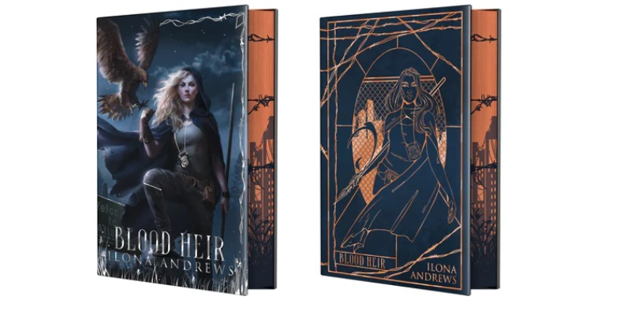

Luisa Preissler designed the dustjackets for both books.
Arcane Society have updated the information on the Ilona Andrews Special Box, containing exclusive hardcover editions of both Iron and Magic and Blood Heir.
The books are expected to arrive from the printer and into the Arcane Society warehouse this Friday, April 19th. That means shipping to customers is estimated to begin next week. You can consult news directly on the Arcane Society updates page or contact them for other enquiries at help@arcanesociety.com.
For anyone who has missed out on the box this time, unfortunately these will not get reprinted. Once the stock is gone, that’s it. Arcane Society are a book subscription service, not commissioned by the authors for the special editions. They are their own independent business who are responsible for creative and commercial decisions, so unfortunately we cannot intercede to have the box reissued or shipped earlier. You can find out more about it on their About and FAQ pages.
However, all is not lost! We will have the opportunity for more pretty books (so purty!) this year, when Subterranean Press release their second Innkeeper Chronicles volume, this time containing Sweep of the Blade, Sweep with Me and the Gerard Demille and Helen Meet short. I don’t have preorder links yet, but it is expected in the second half of the year.
And we do have a sneaky peek at the signing sheets (interior pages made especially for the autograph of the author)